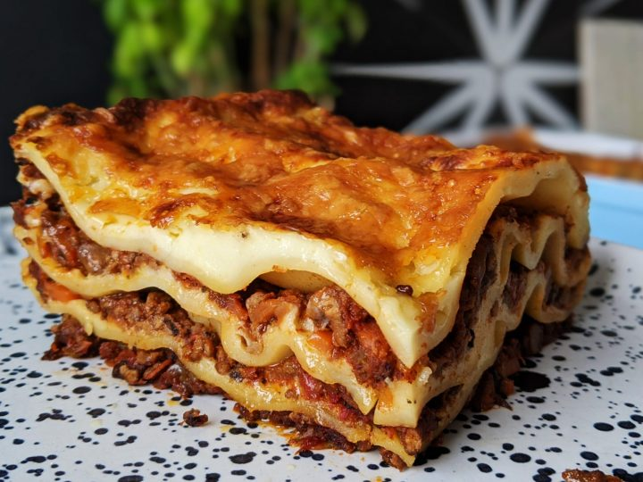

One day, not having any gluten-free pasta on hand but lots of zucchini, I
decided to use 'zoodles' instead of noodles.
The whole family enjoyed it! I don't use any salt in the recipe because
the cheeses already contain it. This dish is even better the next day and
freezes well too.
Ingredients
- 4 zucchini
- 1 1/2 cups homemade or store-bought tomato sauce
- 2/3 cup shredded mozzarella cheese
- 1 1/2 cups bechamel sauce
- 1 cup grated parmigiano reggiano cheese
- 1/4 cup fresh basil, chopped
Steps
- Preheat oven to 375 degrees F (190 degrees C).
-
Cut zucchini lengthwise into 1/4-inch thick slices with a knife or
mandolin.
-
Pour 2 tablespoons tomato sauce on the bottom of a 9x13-inch baking
dish. Arrange zucchini slices in a single layer, slightly overlapping,
over tomato sauce.
-
Top with a thin layer of mozzarella, 1/3 of the bechamel (see Editor's
Note), 1/3 of remaining tomato sauce, 1/3 of the Parmigiano Reggiano
cheese, and 1/3 of the basil. Repeat layers, topping with bechamel and
Parmigiano Reggiano cheese.
-
Bake in the preheated oven until sauce is bubbly and the top is golden
brown, about 35 minutes. Allow to set until remaining liquid is
absorbed, about 10 minutes.